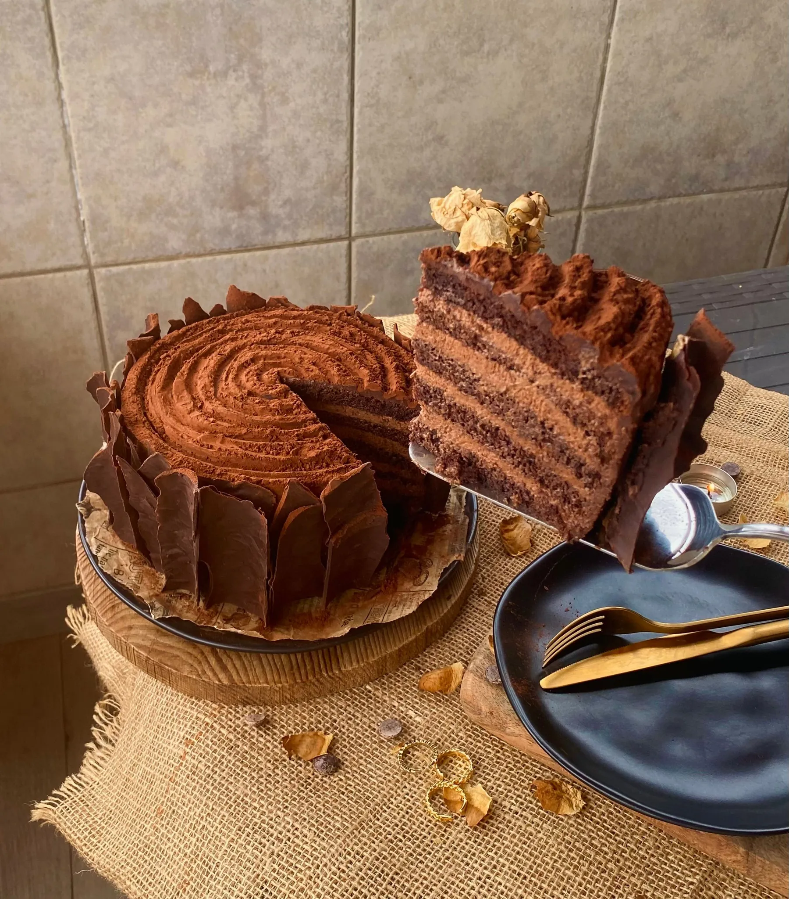
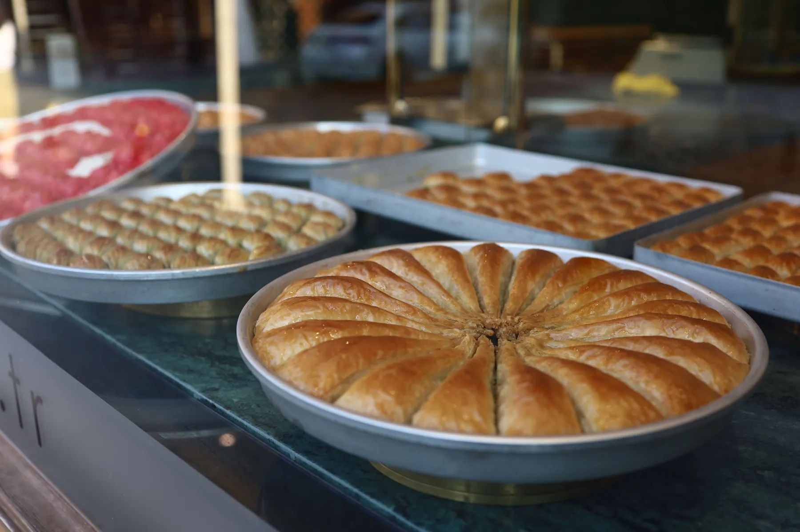
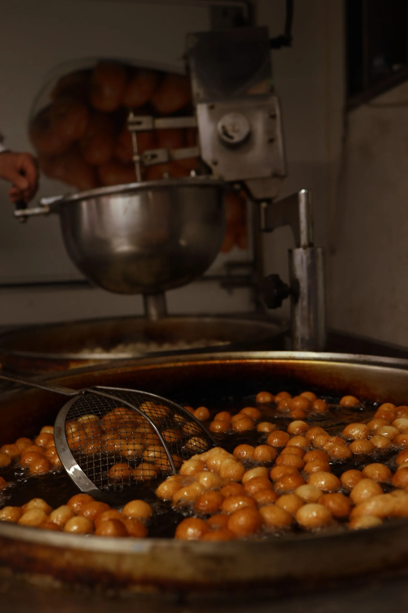
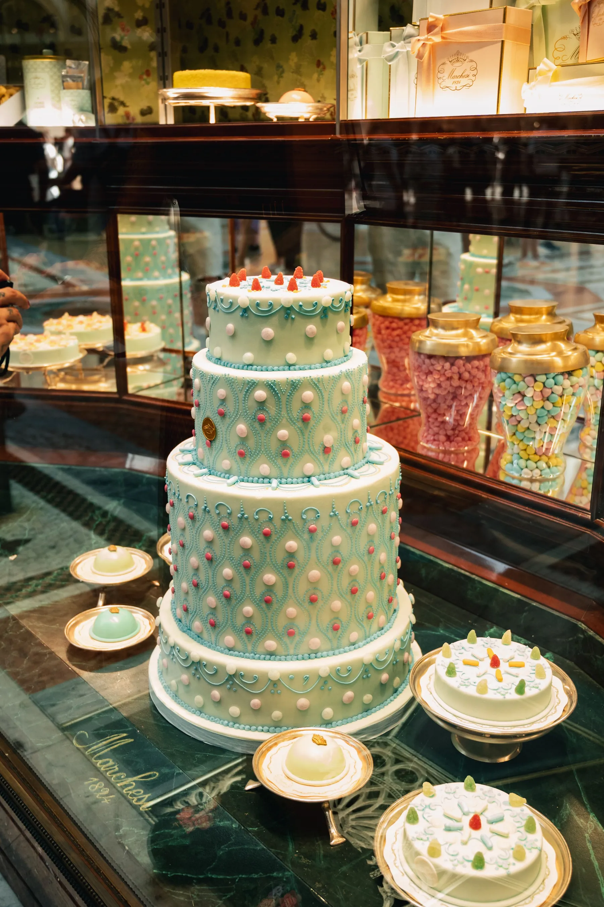
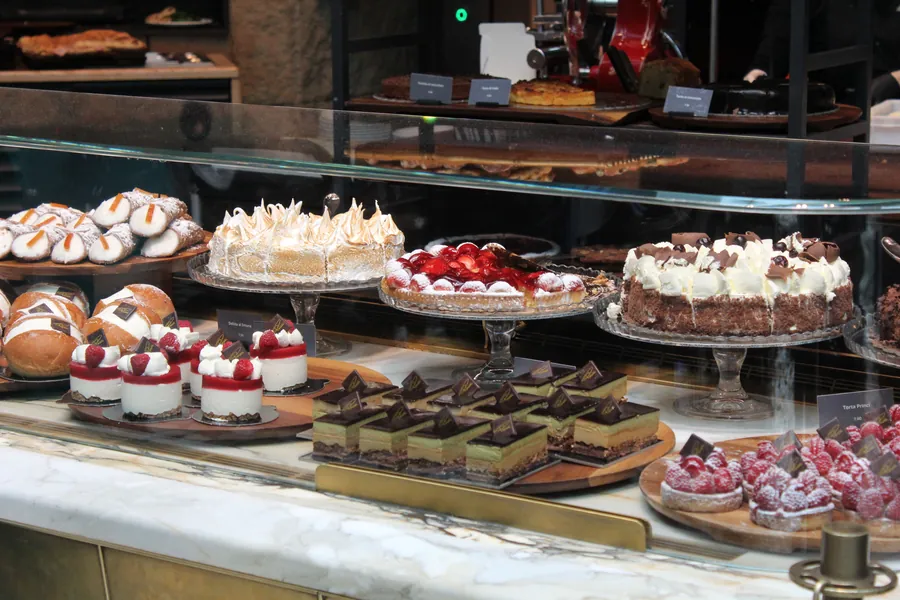
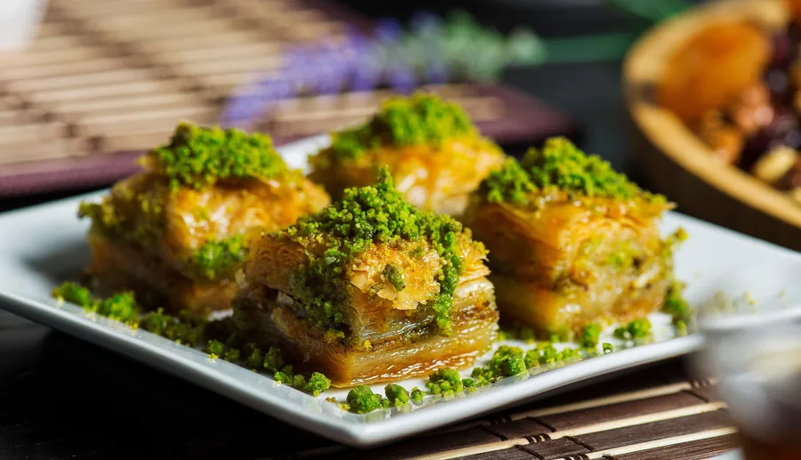
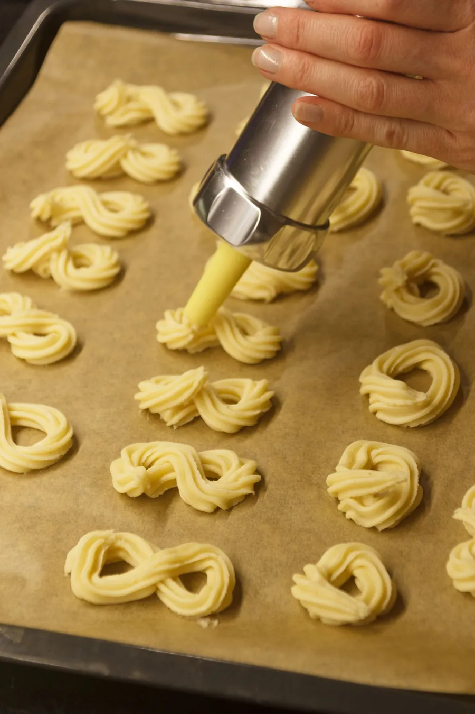

Her kutlamanın
ilk dilimi.
Yaş pasta, baklava, lokma, kurabiye. Vitrinden seçin, özel pastanızı tarif edin; sipariş fişiniz tek mesajda şubeye gitsin.
Bir pastanın asıl hikâyesi vitrinden önce başlar: kimin için, kaç kişilik, üstünde hangi isim. Bu sayfa o soruları müşteriye baştan sorar.


Elde süslenir,
isminizle çıkar.
Bu bölümde atölyenizin hikâyesi durur: pastaların nasıl hazırlandığı, hangi gün için kaç gün önce sipariş verilmesi gerektiği. Bilgiyi sizden alırız; uydurma bir cümle yazmayız.

Bayramın, misafirin,
tepsi tatlısı.
Baklava ve şöbiyet tepsiyle ya da kutuyla. Bayram öncesi yoğunluğunda siparişler bu sayfadan, gün ve adetle birlikte gelir.

Hayır lokması,
kalabalığa göre.
Mevlit, hayır, açılış. Kaç kişi geleceği ve hangi gün olduğu belli olunca aşağıdaki toplu talep formu şubeye tek mesaj gönderir.

Nişanda, kınada, doğum gününde:
masanın ortası.
Seçin, tarif edin, fiş yazılsın.
DM'de gün, kişi, lezzet için giden on mesaj yerine tek fiş. WhatsApp'a hazır gider; isteyen kopyalayıp Instagram DM'ye yapıştırır.
Size en yakın Karaca.
- Telefon
- 0258 241 36 68
- Çalışma saatleri
- Sizden alınıp eklenecek
- Özel pasta
- Sipariş masasından ya da Instagram DM'den

Vitrinden, masadan.








Pastanız güzel olduysa, söyleyin.
Google'daki yorumlar bir sonraki müşterinin kararını verir. Sitede uydurma puan ya da yorum göstermeyiz; doğrudan Google sayfanıza yönlendiririz.